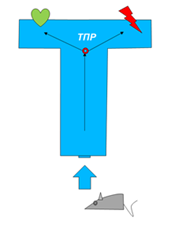
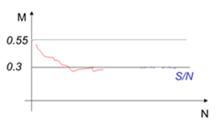
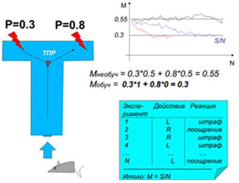
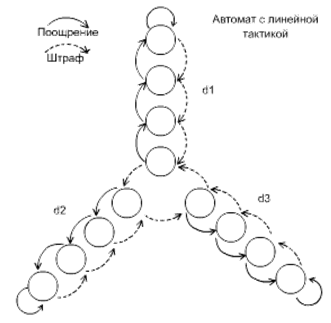
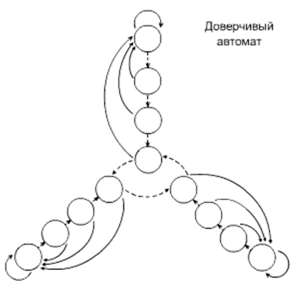
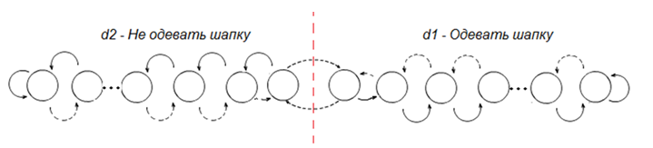
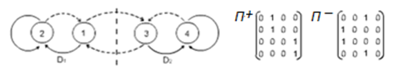
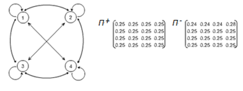
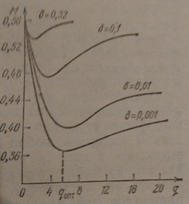
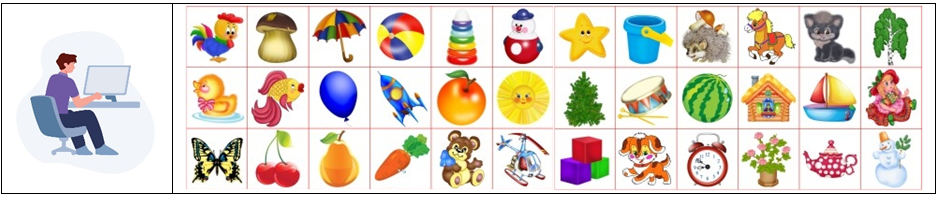

Обучение – один из важнейших механизмов искусственного интеллекта. Нельзя вести себя разумно, если не учитывать произошедшее ранее с тобой или с такими как ты.
Обучаясь, мы узнаём каков мир, каковы его правила, законы. Важнейший вопрос – можно ли построить искусственное устройство, которое может обучаться? «Обучаться» означает
способность на основании данных, фактов из окружающего мира строить его модель, систему уравнений, выражающую его законы.
Автоматизировать можно только то, что понимаешь. Значит, сначала, надо понять, что такое обучение, описать этот процесс, потом составить модель обучения, далее синтезировать
устройство, реализующее такую модель. В конце проверить, способно ли искусственное устройство вести себя аналогично естественному существу, способному обучаться.
Автоматы Цетлина
Михаил Львович Цетлин ответил на поставленные вопросы положительно, построив такие устройства в виде автомата.
Эксперимент заключался в том, что животное (например, мышь) запускали в Т-образный лабиринт. Пройдя точку принятия решения (ТПР), мышь поворачивала налево или направо.
В каждом из концов лабиринта мышь ждало или наказание (удар током), или поощрение (сыр) в зависимости от настроек среды. Естественно животное ничего изначально не знало
о расположении поощрений и наказаний.

Схема эксперимента по выяснению свойства «обучаемость» у животных
Существует 3 режима функционирования среды: детерминированная, стохастическая стационарная (наказания случайны, но их вероятности в каждой части лабиринта постоянны
во времени), стохастическая нестационарная (наказания случайны и их вероятности со временем меняются) среда.
Вариант 1. Допустим, что слева всегда – поощрение, справа – всегда наказание. Сначала мышь поворачивает наугад – налево или направо.
Если вправо, то получает наказание. Второй раз, пытаясь избежать наказания, она поворачивает влево. После получения поощрения мышь привыкает поворачивать налево,
чем демонстрирует свою интеллектуальность. Вывод: мышь обучилась.
В этом режиме среда никогда не меняет своих правил. Мышь не знает, куда надо идти. Но в процессе деятельности у мыши появляется знание (появляется модель, правило),
куда следует идти, куда – нет.
Вариант 2. Условимся, что слева появляется поощрение с вероятностью Рп=0.7 и наказание с вероятностью Рш=0.3.
(Рп+Рш=1). Факт появления поощрения или наказания заранее неизвестен никому, случаен. Но в среднем в 7 случаях из 10, когда мышь выбирает левую часть
лабиринта, она поощряется, а в 3 случаях - наказывается, что сбивает её с толку.
Справа назначим поощрение с вероятностью Рп=0.2, а наказание Рш=0.8. Поскольку Рп+Рш=1, то далее оперировать
будем только штрафами (поощрения можно легко вычислить по формуле Рп = 1 - Рш).
Мышь принимает решение, её наказывают, она меняет решение, привыкает к поощрениям, однако её снова наказывают уже за то, что она привыкла считать правильным, и она снова
меняет решение, пересматривает уже построенную модель поведения …
Идёт сложный процесс, но, как показывают эксперименты с животными и человеком, разумные существа в состоянии вычислить, куда им выгоднее в среднем идти, несмотря на то, что
среда всё время сбивает их с толку. На графике показана кривая обучения со временем для животного, способного обучиться.

Характерный график поведения животного, способного к обучению, М – средний штраф, полученный за всё время
обучения, N – число актов обучения (экспериментов)
Подсчитаем относительное количество штрафов М, которое приходится на «глупую» мышь, которой всё равно, куда поворачивать: 50 на 50.
М=0.5*0.3+0.5*0.8=0.15+0.40=0.55
Подсчитаем относительное количество штрафов М, которое приходится на супер «умную» мышь, которая сразу как-то поняла, куда выгоднее сворачивать:
М=1*0.3+0*0.8=0.30.
Очевидно, что избежать штрафов умной мыши совсем не удастся, таковы среда и её правила, но минимизировать их в своей жизни можно.
Показатели всех остальных мышей будут располагаться в промежутке между 0.3 или 0.55 (кроме редких специальных случаев – мазохизм, удача).
То есть, если лаборанту провести с мышью N экспериментов (например, N=100) и подсчитать, сколько раз S мышь ударили током в том или другом конце
лабиринта (без разницы каком), то легко вычислить экспериментальное значение переменной М, как М=S/N. И сразу выяснить уровень обучаемости конкретного
животного. Для этого достаточно вести лабораторный журнал экспериментов.

Схема эксперимента «обучение мыши»
Если вычислять интервалами по 10 экспериментов (методом скользящего среднего), то можно увидеть динамику обучения: как постепенно мышь переходит
от М=0.55 к М=0.3.
Таким способом можно замерить второй параметр в модели обучения – скорость обучения. На графике на рисунке отражён характер постепенного обучения мыши,
достаточно сравнить синий и красный графики.
В рейтинге обучаемости важно и то, какого уровня понимания ситуации достигает в итоге мышь, и то, как быстро она это делает. Красной линией показан лучший случай –
сообразительной мыши, синей – умной, но медлительной мыши, черной - глупой.
Итак, ясность, что должно делать искусственное устройство, чтобы обладать свойством обучаемости, есть.
Автомат Цетлина с линейной тактикой (АЛТ)
М.Л. Цетлин построил автомат, который в состоянии обучаться в детерминированной и стохастической стационарной средах, – автомат с линейной тактикой.
Обозначается: АЛТ [D,Q]. Параметры: D – количество действий, совершаемых автоматом, Q – глубина лепестка автомата.

Автомат Цетлина с линейной тактикой, АЛТ [3,4]. d1 – первое действие (пойти налево),
d2 – второе действие (пойти направо), d3 – третье действие (вернуться назад)
Обозначим действия автомата D = {d1 – идти налево, d2 – идти направо, d3 – идти назад}. Если реакцией среды на действие автомата d
является поощрение, то автомат переходит в состояние лепестка более глубокое, чем текущее (переход по сплошной стрелке), иначе – наоборот, всплывает из глубины лепестка
или вовсе покидает лепесток, меняя действие на следующее (переход по штриховой стрелке).
Каждая вершина графа – отдельное состояние автомата. Автомат может находиться одномоментно только в одном из состояний. Находясь в определённых состояниях, автомат вырабатывает действие D.
Переходы из состояния в состояние автомата происходят по стрелкам под воздействием реакции среды (наказание, поощрение) на действия автомата D.
Например, если задать среду как Pш={0.8, 0.4, 0.7}, то за действие d1 вероятность штрафа составит в среднем 8 случаев из 10,
за действие d2 – 4 случая из 10, а за действие d3 – 7 случаев из 10. Ясно, что если автомат начнёт с любого состояния, то попав
в лепесток 1, он долго там находиться не будет, потому что в среднем на 2 шага вглубь он будет делать 8 шагов из лепестка. И быстро покинет этот
лепесток и перейдет к экспериментам над действием d2.
Поскольку здесь на 6 шагов вглубь лепестка (поощрение) в среднем приходится 4 шага из лепестка (наказание), то в основном автомат будет находиться внутри
лепестка. Однако, рано или поздно (скорее поздно) случится так, что подряд придёт 4 штрафа, что заставит автомат сменить лепесток d2 на d3.
Долго он там не пробудет, 3 «за» и 7 «против». Автомат снова начнёт менять тактику.
Подводя итог, заметим, что автомат улавливает логику среды, подстраиваясь под её вероятности, которые ему неизвестны. Скажем так, автомат строит модель среды
и начинает вести себя соответственно этой модели, целесообразно.

Доверчивый автомат Кринского
На рисунке изображена также модификация АЛТ – автомат Кринского, доверчивый автомат. С изменением структуры темперамент автомата слегка меняется, но автомат ведёт себя
также целесообразно в режимах 1 и 2. Доверчивым его назвали потому, что часто так себя ведут дети. Если наказывать ребенка за проступок d1,
то приходится это делать неоднократно, чтобы «дошло». Однако, если похвалить ребенка, то все обиды забываются мгновенно.
Известны автоматы Роббинса, Крылова (осторожный) ... и все они обладают способностью принимать целесообразные решения в стохастической стационарной среде, строя её модель
и решая на ней задачу своего рационального поведения. Рассматриваемые автоматы легко справляются со средой в варианте 1 и 2.
Более того, чем больше глубина лепестков автомата Q, тем меньше штрафов такой автомат получит суммарно за свою жизнь. Консервативное поведение здесь
играет автомату на руку. То есть целесообразность автомата растёт с ростом величины Q.
В идеале целесообразность автомата возрастает при Q → ∞. А именно: чем больше глубина лепестка автомата Q, тем глубже при преобладании поощрений
над наказаниями автомат «зайдёт» в лепесток, тем дольше он там будет находиться и тем дольше будет выполнять правильное с точки зрения окружающей среды действие.
И наоборот, если наказания преобладают над поощрениями, то действие быстро меняется на другое.
Вариант 3. Стохастическая нестационарная среда. То есть в тот момент, когда автомат понял условия игры и построил модель, среда меняет правила и перестраивает
вероятности. То, что было раньше «плохо», становится вдруг «хорошо». Это достаточно обычная ситуация в нашем быстроменяющемся мире. То, что Вам не разрешали в детстве,
теперь – можно. То, что разрешали, теперь – непростительно. Сумеет ли автомат понять, что модель мира изменилась, сумеет ли автомат перестроить свою модель?
Да, но вывод о росте целесообразности поведения при условии Q → ∞ уже не верен.
Рассмотрим АЛТ[2,90] с действиями D = {d1 - «не надевать шапку», d2 - «надевать шапку»} в условиях средних широт Земли.

Пока на дворе властвует зима, автомат надевает шапку и каждый день поощряется средой, загоняя себя вглубь лепестка на 90-ю позицию (у нас зима 180 дней в году).
Однако, когда наступает лето, он продолжает упрямо надевать шапку до середины лета, получая, конечно, штраф от среды и возвращаясь постепенно к основе лепестка d2 и,
в конце концов, меняя действие d2 на действие d1. За оставшиеся теплые дни осени автомат научается «не надевать шапку». И тут снова среда меняет свои
правила – и половину зимы автомат ходит без шапки. Признать такой автомат целесообразным здесь уже нельзя. Глубина лепестка, ассоциируемая с консерватизмом, автомат не
спасает.
Попробуем наоборот - уменьшить инерционность (консервативность) автомата Q. Рассмотрим АЛТ [2,1], простейший, минимальный по структуре автомат.
Идет Иванушка-дурачок, смеётся, а навстречу ему похороны. За неадекватность поведения его наказывают. Он мгновенно меняет свое поведение – плачет. А навстречу ему – свадьба.
И снова следует наказание за неадекватность поведения. Как видим, автомат с авантюрным поведением (Q → 0) тоже не подходит для решения поставленной задачи,
так как показывает плохие результаты по показателю штрафов М. Он не в состоянии накопить сведения, обобщить опыт и часто попадает впросак.
Становится ясно, что необходим автомат с такой глубиной Q, которая наилучшим образом подходит к каждой новой задаче, настраивает Q на свойства среды,
оптимизирует величину Q.
Автомат с переменной структурой, АПС
Если из состояния i в состояние j есть переход, то в ячейку матрицы с адресом (i,j) ставится 1, иначе — 0.

Автомат [2,2] представлен матрицами П+ и П-.
Матрица П+ показывает вероятности перехода из состояния в состояние при поощрении. Матрица П- - при наказании автомата
Теперь представим, что автомат — не обучен и ему всё равно, какой переход делать (вероятности перехода из состояния 1 в состояния 1, или 2, или
3, или 4 равны, то есть 0.25), как это показано на рисунке.

Схема безразличного глупого автомата
С помощью генератора случайных чисел мы всегда можем сделать выбор для перехода из одного состояния в другое. Однако, если выбор хоть и сделан, но не верно (последовало
наказание), автомат сам меняет вероятности в матрице.
Конкретно, автомат уменьшает вероятность в ячейке матрицы (вероятность перехода из одного состояния в другое), которая указала на неверный выбор, перераспределяя в равной
степени доли часть её значения в соседние по строке ячейки так, чтобы сумма вероятностей перехода (сумма по строке) оставалась равной 1 (полная группа несовместных
событий). Так постепенно шаг за шагом в матрице (в выгодных её местах) начнут появляться в отдельных ячейках числа, близкие к 1, а в других (невыгодных) – близкие
к 0. Фактически автомат сам создаст собственную структуру для конкретных правил конкретной среды, построит себя сам, настроив модель. При этом глубина Q автомата будет
оптимальной.
При перестройке среды автомат начнёт снова видоизменяться, отслеживая реакции среды на свои действия.
Вывод:в стохастической нестационарной среде автомат с переменной структурой может вести себя целесообразно.
Общий вывод: можно построить такую искусственную систему, которая будет вести себя целесообразно (обучаться, строить модель среды, адаптироваться к окружающему
миру, познавать его) в каждом из трёх вариантов сред.
Эпилог «Кем нам быть: авантюристами или консерваторами»
Цетлин снял опытным путем характеристики, какого уровня целесообразности может достичь автомат в случае изменчивости δ нестационарной среды и какова при
этом будет его оптимальная глубина лепестков q.

График зависимости средних штрафов М автомата Цетлина от его инерционности q (коэффициента
темперамента А:К) и показателя изменчивости среды δ: М(q,δ)
Если среда меняет значения своих вероятностей 1 раз за 1000 эпох, то её изменчивость δ равна 0.001. При таких редких изменениях среды
следует придерживаться значений q = 5 - 6. Увеличение q (консерватизма) приведёт к излишним штрафам за счет инерционности, не восприятию новаций.
Уменьшение q (увеличение авантюризма) приведёт тоже к увеличению штрафов (причём даже более резкому, чем за консерватизм) за счёт беспорядочных метаний,
хаотического поведения индивидуума. Соотношение удач к неудачам в оптимальном варианте qопт составит 2 к 1. Неплохо!
Если среда чаще меняет значения своих вероятностей, например, 1 раз за 10 эпох, то её изменчивость δ равна 0.1.
В этом случае штрафы растут и у авантюриста, и у консерватора («во время перемен плохо всем»). В такой среде жить сложнее – правила всё время меняются.
Но значение q смещается в сторону 3 - 4, то есть авантюризма, поскольку в эпоху перемен легче выжить, моментально реагируя на новые
обстоятельства. Кривая M(q) становится всё более симметричной, острой, а штрафы растут.
Вывод: Консерватором правильнее быть в более спокойное время. А если ошибаться, то лучше в сторону увеличения q («если не знаешь, как поступить, затаись»).
Женское поведение более консервативно, более миролюбиво. Мужское поведение более авантюристично, более агрессивно. Когда мир меняется, надо соответствовать его
изменениям и меняться самому, но …
«Не дай Вам Бог жить в эпоху перемен».
Китайская мудрость.
Критерием выживания разумного организма является минимизация рисков. Минимизация рисков имеет две составляющие – сохранение и развитие.
Ни то, ни другое не есть абсолют. В зависимости от условий окружающей среды в ряде случаев выгоднее консервативное поведение (традиционное «сохранение»), в других –
авантюрное («развитие»). Важно уметь переходить при необходимости от одного к другому – от обороны к нападению, и наоборот.
К консервативному поведению более тяготеют женщины, чья физиология и психология эволюционно направлена на поддержание и сохранение семьи, детей, дома. Они более осторожны
(трусливы), склонны к накоплению ресурсов, сидению дома, защите. К авантюрному – мужчины, нацеленные на добычу, разведку, агрессию, новизну, модернизацию, развитие.
В каждом человеке есть в определённой пропорции и составляющая «развития», и составляющая «сохранения». В тяжёлые моменты сдвиг происходит в сторону сохранения жизни и
всего достигнутого любой ценой. В благоприятные моменты сдвиг идёт в сторону развития, поскольку сохранение обеспечено и хочется чего-то большего.
Следует понимать, что мужское поведение более расточительно, доля неудач здесь больше по отношению к доле удач, чем при поддержании тактики консерватора. Оптимальным
является правильное сочетание авантюрной А и консервативной К стратегий (коэффициент темперамента А:К) в соответствии с параметром изменчивости
среды δ.
Интересно, что на основе описанных экспериментов был составлен рейтинг животных по степени сообразительности, способности обучаться. Вполне ожидаемо места в первой
десятке заняли дельфины, свиньи, вОроны, … . Человек занял в этом рейтинге 4 - 5 место. После разбора этого удивительного факта удалось выяснить, что если
разделить людей на классы мужчин и женщин, то женщины занимали первые места, а мужчины, портя статистику, - восьмые-девятые. В среднем получалось 4 - 5 место.
Эксперимент ставился на стенде. На экране человеку поочередно демонстрировались разнообразные картинки, похожие на те, что нарисованы на дверях шкафчиков в детском саду.

Компьютер случайным образом «задумывал» закономерность - например, «красные И съедобные», о которой испытуемый не знал. Перед человеком стоял выбор (две кнопки):
принять очередную картинку (Да) или отвергнуть (Нет) – соответствует картинка задуманной закономерности или нет. Если выбор был неверный (нажата не та
кнопка), то раздавался неприятный сигнал или следовал удар человека током. Если выбор кнопки соответствовал задуманной закономерности, то неприятности отсутствовали
(приятная мелодия, похвала).
Надо сказать, что и мужчины, и женщины довольно быстро улавливали скрытую от них изначально закономерность, ориентируясь только на поощрения и наказания среды. И всё чаще
в процессе эксперимента правильно делали свой выбор – нажимали нужную кнопку. Общая статистика M(N)=S/N постепенно улучшалась, сигнализируя экспериментаторам
о способности к разумному поведению, обучаемости. Женщины закрепляли полученное, не ошибаясь далее. Однако мужчины время от времени, уловив закономерность, всё равно
ошибались.
На вопрос мужчине: «Почему, обучившись, поняв закономерность, Вы, тем не менее, поступали нелогично, был получен ответ: «А интересно, что будет?». В отличии от
консервативной тактики обучения «сохранения», присущей женщинам, у мужчин была явно выражена компонента «развития», авантюризма. «Вдруг там ещё лучше». Поговорка
«От добра добра не ищут» для мужчин не работала.
Иногда это оправдывало себя, чаще – нет. Известно, что мужчины чаще погибают, раньше умирают, чем женщины, проявляя склонность к исследованиям, часто опасным, испытывая
тягу к новому, неизведанному. Однако, ценой их смерти общество получает новую информацию, полезную для выживания популяции в целом. Мужчины дарят обществу новую
информацию, защищая его от гибели
Вопрос: «Почему? За что?» - Ответ: «За любовь».
Примечание. Так ли страшно, что мужчины погибают чаще женщины, ведь их природная миссия для эволюции популяции человека может оказаться не выполненной?
Ответ: Нет, не страшно, если передача генов будущим поколениям от мужчин уже состоялась. Задачу опеки подрастающего поколения женщина выполняет дольше, чем мужчина,
и её возраст дожития, соответственно, выше мужского.
Параметр темперамента в целом предопределяет и профессиональные склонности: повара в столовых, воспитатели в детских садах – женщины; а повара в ресторанах, преподаватели
в ВУЗах – мужчины.
Кстати, подобные устройства в виде браслетов иногда используют для обучения брокеров, вырабатывая у них в результате так необходимую им интуицию (разумеется в весьма
ограниченных пределах).
Как выяснилось, автоматы не просто играют в игры, а играют в коллективные игры, дополняя этим друг друга, поддерживая рациональность поведения популяции в целом.